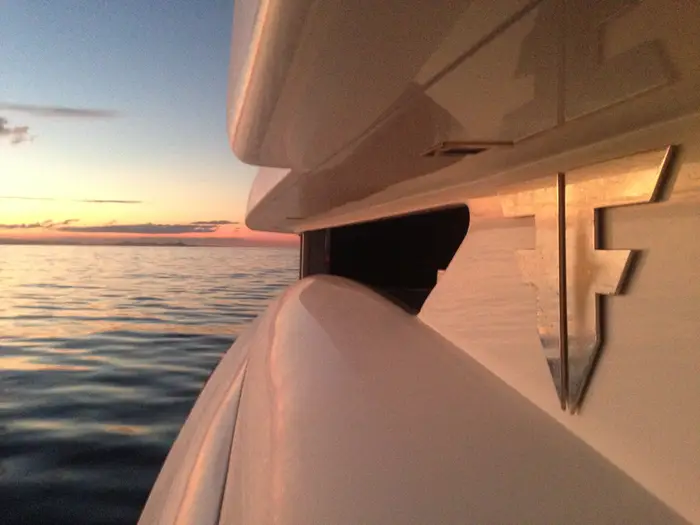

Our Services
Yacht Consulting
Every vessel owner has unique goals, sharing our passion and enthusiasm for all things boating we can help you turn your floating goals and dreams into reality.
Provided with the right advise we can save your time for the pleasures of boating.
Purchasing, maintaining and selling a vessel can be a complex and time-consuming exercise in logistical, legal and regulatory compliance, we can relieve you of this sometimes overwhelming experience by providing advice and guidance to navigate your way through this process.
Our teams yacht consulting services include, acting as an owners representative and bringing on board maritime surveyors and maritime legal representation when required, pre-purchase inspections in regard to fit for purpose and vessel condition, vessels comparability study's for valuation and market pricing, management of new build and refit projects, consultation on local and international safety and compliance, import and export of vessels and facilitating yacht transport, the initial set up of a vessels maintenance program and sourcing on-going crew and management.
If you need help or advise in any of these areas reach out and we will do our best to assist you.
Filippetti Yachts Ambassador Sales and commercial contact for the Australian region

We are the direct contact for the Filippetti Yachts Shipyard, based in Mondolfo, Italy, supporting owners, agents, and buyers in the Australian region. Having previously imported, maintained, and managed vessels for the Filippetti Shipyard in Australia, we handle sales, local warranty support and assist with maintenance programs and parts sourcing as needed.
The Filippetti Shipyard was born from a family legacy deeply rooted in the Italian superyacht building industry for over 40 years. Fausto Filippetti, head of the Filippetti family, was a co-founder of the iconic luxury sports yacht brand Pershing in 1985. Established in 2009, Filippetti Yachts now embody true Italian luxury craftsmanship, blending nautical practicality with performance and highly customisable design. The yard collaborates with award-winning and renowned yacht designers to help clients bring their nautical dreams to life. Contact us if you would like to know more or visit them here.